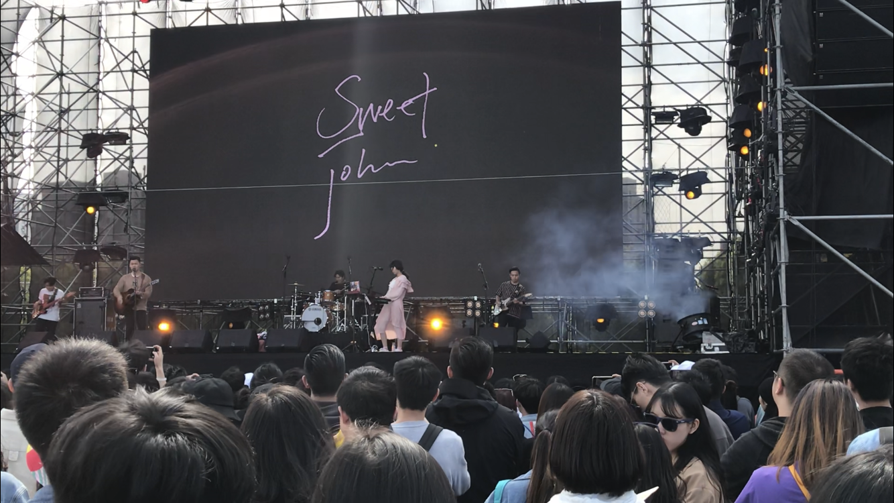

All About Sweet John
Sweet John is a pretty new band from China Taiwan. It was formed in the year of 2016. Most of the members come from formal band Natural Outcome. The member of the band include main vocal Junwei, keyboard "Mandark", guitar "Can", bass Jiang, and drumset "Lil J".
The music of Sweet John is commented as "the music for a winter morning", it is pretty chill and soft and dreamy, but still have a little sence of loneliness. All the members used to be in a band called Natural Outcome back in the university. After graduation, the members goes to Military, research, and regular day jobs. Until Jiang reunion the band with a song called "Angelina". The lyric of the song is just likely dramatic and reomantic - "There used to be someone/who broke the wall/hazy and glummy/only vague memories".
Me and Sweet John
The first Sweet John song I heard is "Chance of Rain". This is a love song about a chance of meeting the true love. The lyric is romantic and full of fantasy, if Li Zhi's song is like some realistic poems, then Sweet John's song are like teenage daydreams.
The first Sweet John live I've ever been to is on the Shanghai Strawberry Music Festival in 2019. I was totally astonished about how strongly the band can influnce people. It is so catchy but not like other heavy musics. it is so indie and sweet. Just like the name Sweet John.
My favorite song from Sweet John is called "THe Romantic Functionalities of the City", I'm gonna attach the music vedio below!
This is the Music Video of Sweet John - "The Romantic Functionalities of the City"